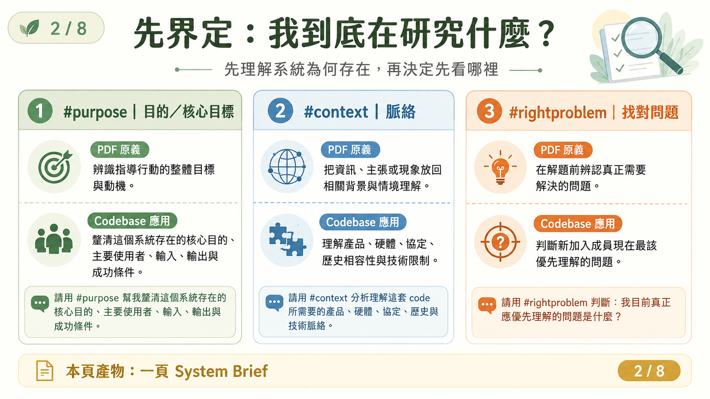
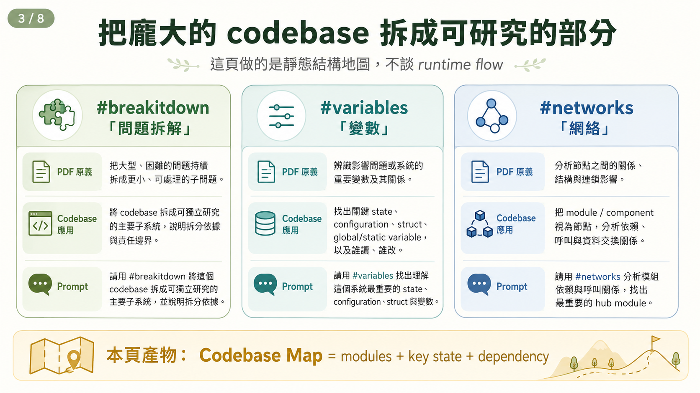
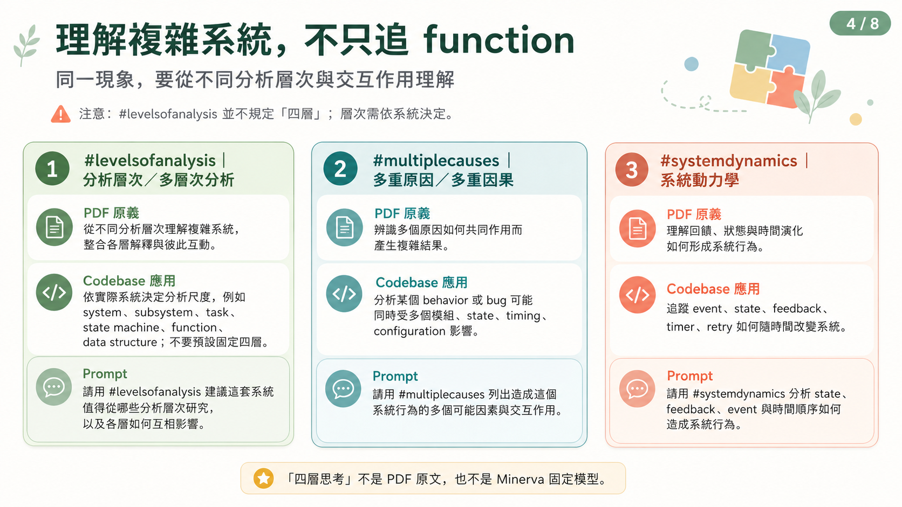
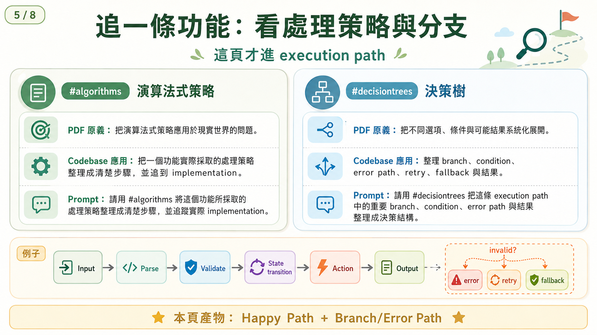
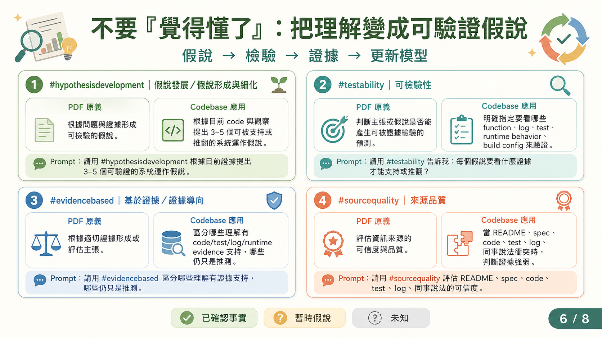
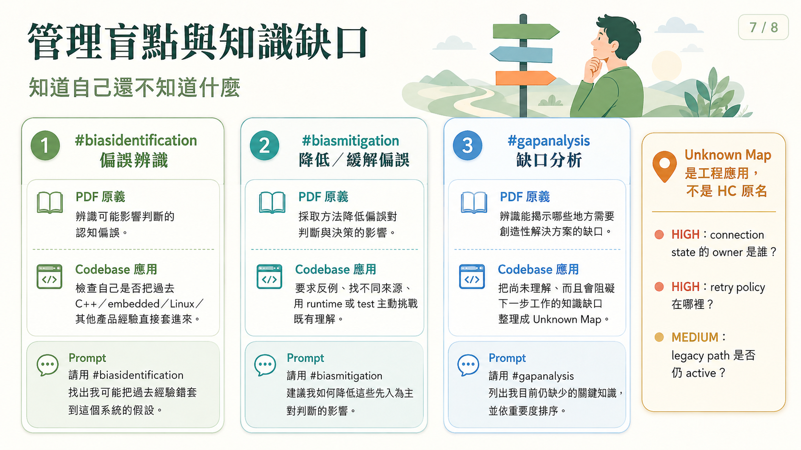
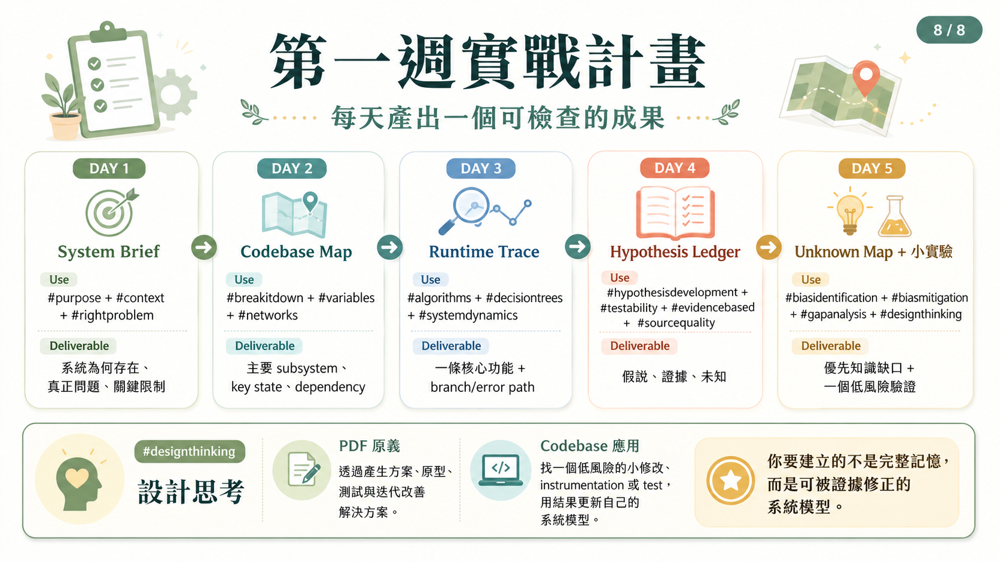

[筆記] 用密涅瓦大學（Minerva）核心習慣與通識能力（HCs）讀懂陌生 Codebase
面對龐大且陌生的 Codebase，最忌諱過早陷入局部細節或盲目通讀原始碼。本文將密涅瓦大學（Minerva）的核心習慣與通識能力（HCs）轉化為一套專門探索陌生 Codebase 的認知工具箱，透過多層次拆解、假說驗證與系統動力學思維，建立清晰且精確的心智模型（Mental Model）。
參考連結：https://www.mext.go.jp/content/20250717-mxt_koutou02-000043727_4.pdf
什麼是核心習慣與通識能力（HCs）？
HCs（Habits of Mind and Foundational Concepts） 是密涅瓦大學教學架構的核心，其定義與在工程領域的定位如下：
- 本質 ：面對高度複雜與未知問題時，可反覆調用的 思考習慣與認知標籤 （非死記硬背的知識點，亦非死板僵化的 80 步 Checklist）。
- 在工程上的定位 ：閱讀陌生系統時，用來「提醒自己如何思考、避免過早下定論」的認知導航工具。
- 核心心態 ：不追求「一次看完整個 codebase」，而是專注於 「透過證據逐步建立並修正系統運作的 Mental Model」 。
各階段 HC 拆解與實踐
在進入大型 C 專案時，可將認知歷程分為六個階段，各階段對應特定的 HCs 思考工具與具體工程產出：
- 階段一：界定問題 （產出：System Brief）
- 階段二：結構拆解 （產出：Codebase Map）
- 階段三：多層次理解 （系統動力學）
- 階段四：追蹤執行路徑 （產出：Happy Path & Error Path）
- 階段五：假說驗證 （產出：Hypothesis Ledger）
- 階段六：盲點管理 （產出：Unknown Map）
階段一：界定問題（產出：System Brief）

在閱讀任何一行具體函式之前，先釐清「這套系統為何存在、需要先掌握什麼外部條件」：
#purpose（核心目的）：釐清這套系統的使用者是誰、解決什麼核心問題、主要的輸入／輸出為何，以及成功運作的標準。#context（脈絡）：補足非程式碼的背景資訊，包含底層硬體架構、通訊協定（Protocol）、作業系統限制、歷史技術包袱與效能邊界。#rightproblem（找對問題）：優先鎖定當前最迫切需要理解的核心路徑與問題，避免過早鑽入旁枝末節的實作細節。
階段二：結構拆解（產出：Codebase Map）

將看似密不可分的龐大系統分解為可獨立理解的模組與其相互關係：
#breakitdown（問題拆解）：自頂向下依序拆解： 大系統 $\to$ Subsystem $\to$ Module $\to$ 模組職責 。#variables（變數與狀態）：找出關鍵的 State、Configuration、核心 Struct、全域變數（Global）與靜態變數（Static），並徹底釐清其讀寫權限與生命週期（Ownership）。#networks（關係網絡）：繪製模組依賴圖，找出資料流向與整個系統的核心 Hub 模組。
階段三：多層次理解（系統動力學）

跳脫單一函式逐行追蹤的侷限，從整體系統架構的高層次切入：
#levelsofanalysis（分析層次）：切換至最適當的抽象層級（ System $\to$ Subsystem $\to$ Module $\to$ Function $\to$ State ）進行切入分析，且此層次劃分可依專案特性彈性調整， 非固定死板層級 。#multiplecauses（多重因果）：在 C 語言中，Bug 往往源於系統 Configuration、時序（Timing）、狀態轉移（State）與硬體行為的交互作用，絕非單純特定單一 Function 寫錯。#systemdynamics（系統動力學）：針對 Embedded 與 Pure C 的特性，深入分析 State Machine、Timer、Event 驅動與反饋迴路（Feedback Loops）等隨時間推移的動態變化行為。
階段四：追蹤執行路徑（產出：Happy Path & Error Path）

動態追蹤系統關鍵業務邏輯的實際運作流向：
#algorithms（演算法式策略）：完整梳理從 Input $\to$ Parse $\to$ Validate $\to$ State Transition $\to$ Action $\to$ Output 的端到端處理邏輯。#decisiontrees（決策樹）：將程式碼中密集的條件判斷（if/else、switch）抽象化為包含分支（Branch）、前置條件（Condition）與異常處理（Error Handling）的完整決策模型。
階段五：假說驗證（產出：Hypothesis Ledger）

工程師最常見的盲點是「以為自己看懂了」。此階段將主觀猜測具體轉化為「可檢驗的命題」：
#hypothesisdevelopment（假說發展）：將推測具體化（例如：「推測 Connection state 是由 Module A 負責管理」）。#testability（可檢驗性）：為假說設計明確的驗證途徑（例如：查看 Log、設定斷點、於 Runtime 觀察行為、執行特定 Unit Test）。#evidencebased（證據導向）：必須使用實際程式碼、測試結果或執行數據佐證，杜絕主觀臆測。#sourcequality（來源品質）：客觀評估證據的可信度排序： Runtime 行為 $\ge$ Test $\ge$ Implementation $\ge$ Spec 文件 $\ge$ 口頭傳聞 。
Hypothesis Ledger 結構範例
透過結構化表格記錄並持續更新假說狀態：
| Claim（主張） | Evidence（證據） | Confidence（信心度） | Status（狀態） |
|---|---|---|---|
| Connection state 由 Module A 管理 | Code 實作 + 單元測試覆蓋 | High | 已確認 |
| Retry 機制由 Module B 觸發 | 靜態程式碼分析 | Medium | 待驗證假說 |
| 連線 Timeout 之根本原因 | 尚無直接日誌與測試證據 | Low | Unknown |
階段六：盲點管理（產出：Unknown Map）

主動辨識知識斷層與既有的思維偏誤，避免帶入錯誤假設：
#biasidentification（偏誤辨識）：警惕跨語言或跨架構的心智模型慣性（例如：習慣性將 C++ 的物件導向與多型思維直接套用至 Pure C）。#biasmitigation（偏誤緩解）：透過刻意尋找反例、翻閱歷史 Git Commit 紀錄、撰寫對比測試等具體方式降低認知偏差。#gapanalysis（缺口分析）：條列出「已知資訊」與「達成目標所需資訊」之間的落差，標註優先順序，建立系統化的 Unknown Map 。
第一週實戰計畫（5-Day Roadmap）

面對一套全新的陌生專案，可以依照五天節奏循序推進，每天鎖定特定的核心思維與交付成果：
| 天數 | 目標主題 | 核心 HCs 工具 | 核心產出 |
|---|---|---|---|
| Day 1 | 系統界定 | #purpose #context #rightproblem |
System Brief （釐清核心目的、邊界與背景限制） |
| Day 2 | 架構拆解 | #breakitdown #variables #networks |
Codebase Map （模組邊界、關鍵狀態與相依拓撲圖） |
| Day 3 | 動態追蹤 | #algorithms #decisiontrees #systemdynamics |
Execution Trace （正常路徑與異常路徑的執行模型） |
| Day 4 | 假說驗證 | #hypothesisdevelopment #testability #evidencebased #sourcequality |
Hypothesis Ledger （嚴格區分客觀事實與主觀假設） |
| Day 5 | 缺口與實驗 | #biasidentification #biasmitigation #gapanalysis #designthinking |
Unknown Map （低風險實驗驗證並迭代修正模型） |
核心心智模型流程
探索大型陌生專案不要漫無目的的隨機瀏覽，而是一個嚴謹遞進的閉環認知歷程：
$$\text{Purpose} \to \text{Break it down} \to \text{Levels of analysis} \to \text{Trace} \to \text{Hypothesis} \to \text{Evidence} \to \text{Gaps} \to \text{Experiment}$$
|
|
總結
閱讀龐大陌生的 Pure C 專案時，切忌將 HCs 當成死板填寫的清單。將它們視為一組具備彈性的 「認知鷹架」 ，能幫助工程師在資訊過載與細節洪流中，保持高維度的全局視野， 透過實證逐步建立、驗證並動態修正對系統的心智模型 。